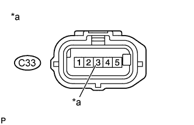

DTC P0102 Низкий уровень сигнала на входе цепи датчика массового или объемного расхода воздуха |
DTC P0103 Высокий уровень сигнала на входе цепи датчика массового или объемного расхода воздуха |
| Режим поездки при обнаружении DTC | Условие обнаружения DTC | Неисправный участок |
| 3 с после запуска двигателя | В течение 3 с частота сигнала датчика массового расхода воздуха составляет менее 850 Гц при частоте вращения коленчатого вала двигателя не более 5000 об/мин (логика диагностирования за 1 поездку). |
|
| Режим поездки при обнаружении DTC | Условие обнаружения DTC | Неисправный участок |
| 3 с после запуска двигателя | В течение 3 с частота сигнала датчика массового расхода воздуха составляет более 9800 Гц при частоте вращения коленчатого вала двигателя не более 5000 об/мин (логика диагностирования за 1 поездку). |
|
| № DTC | Параметры из Data List |
| P0102 | MAF |
| P0103 |
| 1.ПРОВЕРЬТЕ ДАТЧИК МАССОВОГО РАСХОДА ВОЗДУХА (ЦЕПЬ ПИТАНИЯ) |
|  |
Отсоедините разъем датчика массового расхода воздуха.
Измерьте напряжение в соответствии со значениями, приведенными в таблице.
| Контакты для подключения диагностического прибора | Положение переключателя | Заданные условия |
| C33-3 (+B) - масса | Зажигание включено (IG) | 11-14 В |
| *a | Вид спереди разъема со стороны жгута проводов: (к датчику масссового расхода воздуха) |
Подсоедините разъем датчика массового расхода воздуха.
|
| ||||
| OK | |
| 2.ПРОВЕРЬТЕ ЖГУТ ПРОВОДОВ И РАЗЪЕМ (ДАТЧИК МАССОВОГО РАСХОДА ВОЗДУХА – ECM) |
Отсоедините разъем датчика массового расхода воздуха.
Отсоедините разъем ЭБУ.
Измерьте сопротивление в соответствии со значениями, приведенными в таблице ниже.
| Контакты для подключения диагностического прибора | Режим | Заданные условия |
| C33-5 (VG) - C90-17 (VG) | Всегда | Менее 1 Ом |
| C33-4 (E2G) - C90-18 (EVG) | Всегда | Менее 1 Ом |
| Контакты для подключения диагностического прибора | Режим | Заданные условия |
| C33-5 (VG) или C90-17 (VG) - масса | Всегда | 10 кОм или более |
Подсоедините разъем датчика массового расхода воздуха.
Подсоедините разъем ECM.
|
| ||||
|
| ||||
| 3.ПРОВЕРЬТЕ ЖГУТ ПРОВОДОВ И РАЗЪЕМ (ДАТЧИК МАССОВОГО РАСХОДА ВОЗДУХА - БЛОК РЕЛЕ МОТОРНОГО ОТСЕКА) |
Отсоедините разъем датчика массового расхода воздуха.
Извлеките интегрированное реле № 1 из блока реле моторного отсека.
Измерьте сопротивление в соответствии со значениями, приведенными в таблице ниже.
| Контакты для подключения диагностического прибора | Условие | Заданные условия |
| C33-3 (+B) - 1B-8 | Всегда | Менее 1 Ом |
| Контакты для подключения диагностического прибора | Условие | Заданные условия |
| C33-3 (+B) или 1B-8 - масса | Всегда | 10 кОм или более |
Подсоедините разъем датчика массового расхода воздуха.
Установите интегрированное реле № 1.
|
| ||||
|
| ||||
| 4.ОТРЕМОНТИРУЙТЕ ИЛИ ЗАМЕНИТЕ ЖГУТ ПРОВОДОВ ИЛИ РАЗЪЕМ |
Отремонтируйте или замените жгут проводов или разъем.
|
| ||||
| 5.ПРОВЕРЬТЕ ЦЕПЬ ПИТАНИЯ ECM |
Проверьте цепь питания ECM (Нажмите здесь)
|
| ||||
| 6.ЗАМЕНИТЕ ДАТЧИК МАССОВОГО РАСХОДА ВОЗДУХА |
Замените датчик массового расхода воздуха (Нажмите здесь).
| ДАЛЕЕ | |
| 7.ПРОВЕРЬТЕ, ВЫВОДИТСЯ ЛИ КОД DTC СНОВА |
Подсоедините портативный диагностический прибор к DLC3.
Удалите коды DTC (Нажмите здесь).
Запустите двигатель и дайте ему поработать не менее 3 с.
Войдите в следующие меню: Powertrain / Engine and ECT / DTC.
Считайте коды DTC.
| Результат | Следующий шаг |
| P0102 или P0103 выводится | А |
| Коды DTC не выводятся | B |
|
| ||||
| А | |
| 8.ЗАМЕНИТЕ ECM |
Замените ECM (Нажмите здесь).
| ДАЛЕЕ | |
| 9.ПРОВЕРЬТЕ, УСТРАНЕНА ЛИ ДОЛЖНЫМ ОБРАЗОМ НЕИСПРАВНОСТЬ |
Подсоедините портативный диагностический прибор к DLC3.
Сбросьте коды DTC (Нажмите здесь).
Запустите двигатель и дайте ему поработать не менее 3 с.
Войдите в следующие меню: Powertrain / Engine and ECT / DTC.
Убедитесь, что DTC не выводится снова.
| ДАЛЕЕ | ||
| ||